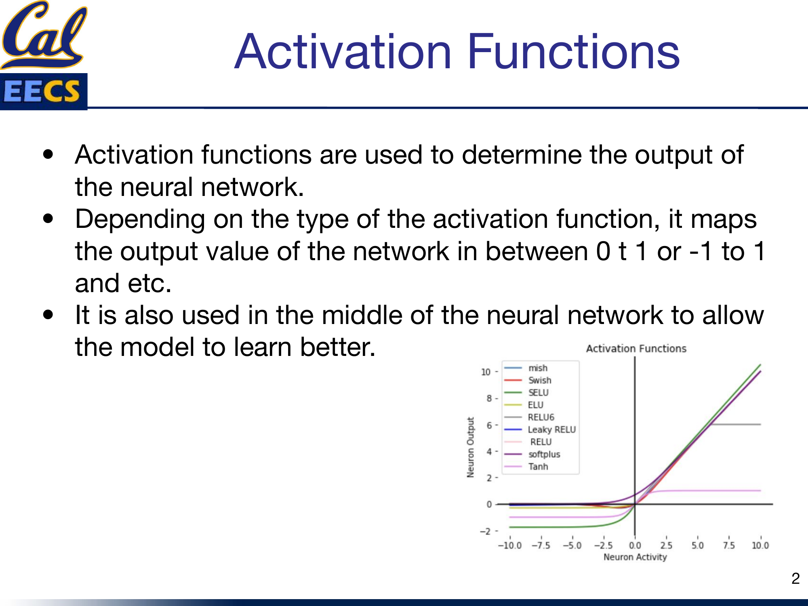
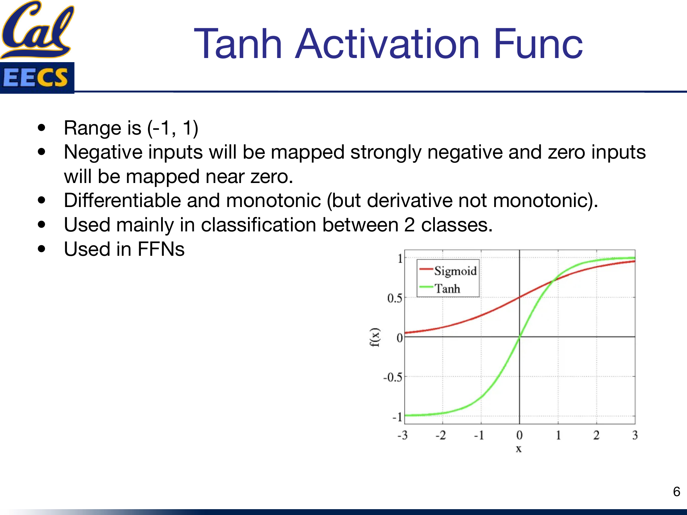
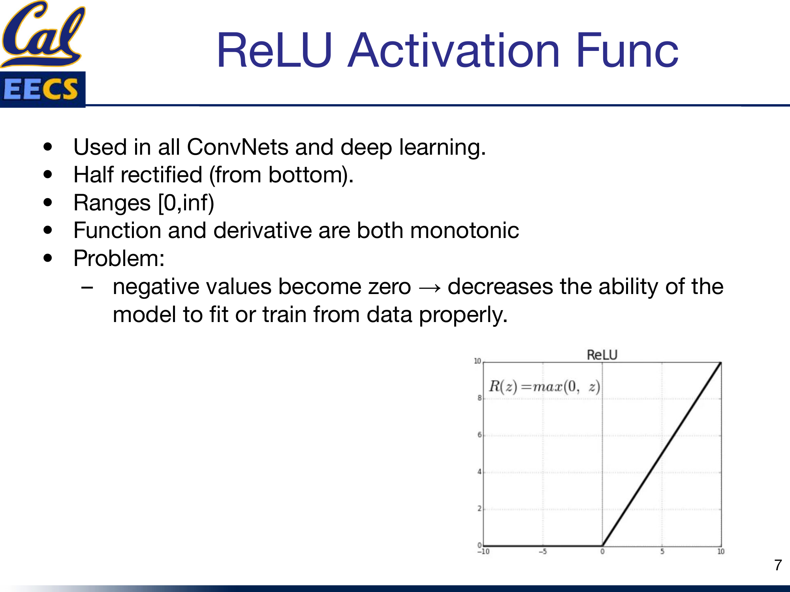
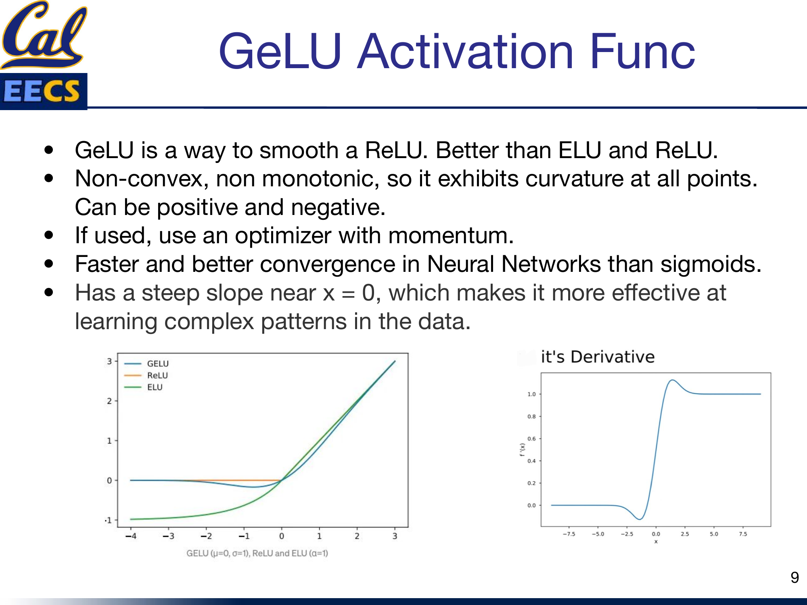
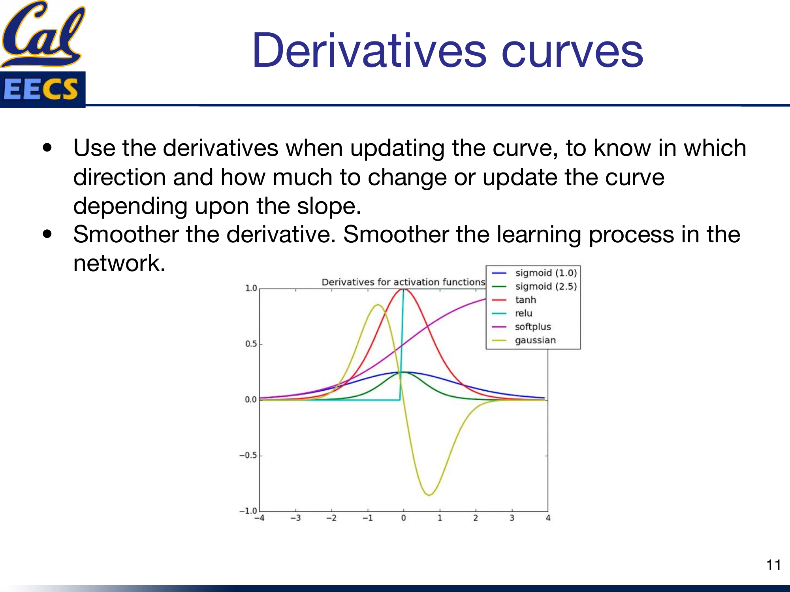
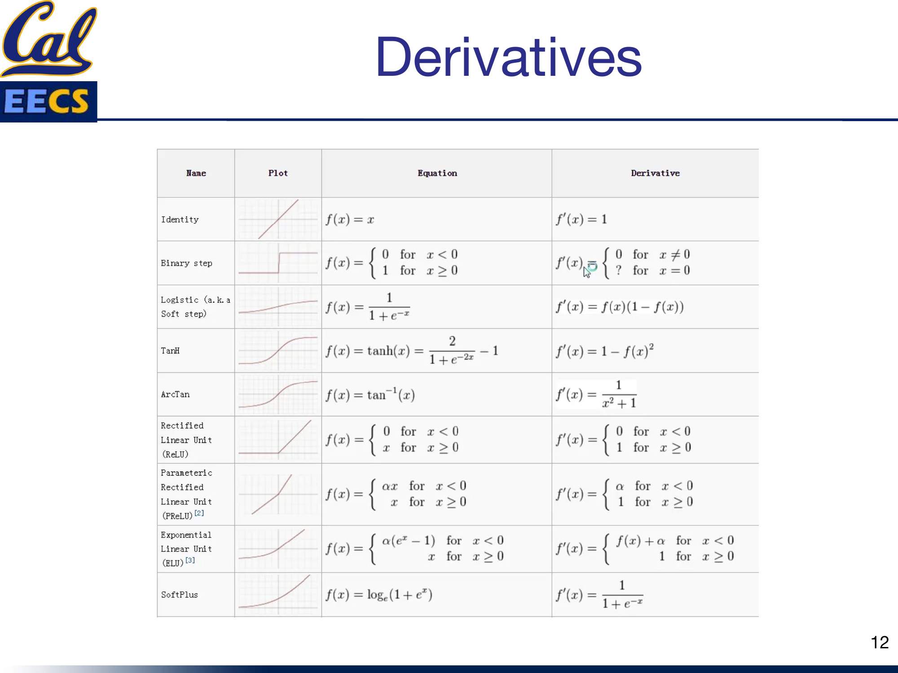

Survey of Activation Functions: A Practitioner's Guide
By Hiva Mohammadzadeh | Stanford MSCS · UC Berkeley EECS
Why Activation Functions Matter
Every neural network needs a decision-maker at each neuron. That decision-maker is the activation function. It takes the weighted sum of inputs and decides what signal to pass forward. Without it, your entire network -- no matter how deep -- collapses into a single linear transformation. A 100-layer network with no activation function is mathematically equivalent to a single-layer network. That is the whole point.
Activation functions do two things. First, they determine the output range of each neuron: maybe 0 to 1, maybe -1 to 1, maybe 0 to infinity. Second, and more importantly, they inject nonlinearity into the network. That nonlinearity is what lets the model actually learn complex patterns in data -- the kind of patterns that matter in real problems.

Comparison curves of Mish, Swish, SELU, ELU, ReLU6, Leaky ReLU, ReLU, Softplus, and Tanh
I have worked with most of these functions in practice, and picking the right one is not a minor detail. It directly affects whether your model trains at all, how fast it converges, and what final accuracy you get.
Linear vs Non-Linear (and Why Non-Linear Wins)
The simplest activation function is the identity:
The range is unbounded: (-infinity, +infinity). It passes the signal straight through. The problem is obvious -- it adds zero complexity. Your model cannot learn anything beyond a linear relationship between inputs and outputs. For the kind of data we actually work with (images, text, audio, tabular data with interactions), linear relationships are almost never sufficient. A stack of linear layers is still just a linear function. So we need nonlinearity.
Non-linear activation functions are what make neural networks universal function approximators. They allow the model to generalize across varied data and to differentiate between outputs in meaningful ways.
Two terms come up constantly when comparing activation functions:
- Differentiable: You can compute the slope of the function at any point. This matters because backpropagation needs gradients.
- Monotonic: The function is either always non-decreasing or always non-increasing. This affects optimization stability.
The Classics: Sigmoid and Tanh
Sigmoid
Sigmoid was the default activation function for years, especially in feedforward networks (FFNs). It maps any input into the range (0, 1), which makes it a natural choice when you need to predict a probability.
Sigmoid is differentiable and monotonic (though its derivative is not monotonic). It is smooth, it is bounded, and it has an intuitive probabilistic interpretation.
The problem: vanishing gradients. For large positive or large negative inputs, the sigmoid output saturates near 0 or 1. The gradient in those regions is nearly zero. During backpropagation, those near-zero gradients get multiplied together across layers, and the network effectively stops learning. I have seen models get completely stuck during training because of this -- the loss plateaus and nothing you do with the learning rate fixes it. That is the sigmoid saturation trap.
Tanh
Tanh is sigmoid's zero-centered cousin. It maps inputs to the range (-1, 1).

Side-by-side comparison of Sigmoid and Tanh curves
The key advantage over sigmoid: negative inputs get mapped to strongly negative outputs, and zero inputs map near zero. This zero-centering helps with gradient flow and generally makes optimization easier. Tanh is differentiable and monotonic (like sigmoid, its derivative is not monotonic).
I reach for Tanh mainly in binary classification scenarios. It is still used in FFNs, but for deep networks, there are better options now.
Both sigmoid and tanh share the same fundamental weakness: gradient saturation at the extremes. For deep networks, that is a dealbreaker.
The ReLU Family
ReLU
ReLU changed everything. It is the activation function used in virtually all convolutional networks and most deep learning architectures today.
It is half-rectified from the bottom: anything negative becomes zero, anything positive passes through unchanged. The range is [0, +infinity). Both the function and its derivative are monotonic. It is dead simple to compute, and it does not saturate on the positive side -- gradients flow freely for positive activations.

ReLU function curve showing the characteristic zero-floor shape
The problem: dying ReLU. Any neuron that receives a negative input outputs zero, and the gradient through it is also zero. Once a neuron falls into this regime, it may never recover. It is effectively dead -- it contributes nothing to the model and learns nothing from the data. In practice, if your learning rate is too high, a large fraction of your neurons can die early in training, and your model's capacity collapses.
Leaky ReLU
Leaky ReLU is the straightforward fix for the dying ReLU problem. Instead of clamping negative values to zero, it lets them through with a small slope:
f(y) = y for y ≥ 0
(where a = 0.01 typically)
The range is (-infinity, +infinity). Both the function and its derivative are monotonic. The small negative slope (usually 0.01) means that neurons never fully die -- they always have a non-zero gradient, so they always have a chance to recover and keep learning.
In practice, Leaky ReLU is a drop-in replacement for ReLU. The performance improvement is not always dramatic, but it removes the dying neuron failure mode, and that makes training more robust.
Modern Activations: GeLU and Swish
GeLU (Gaussian Error Linear Unit)
GeLU is what you get when you smooth out ReLU in a principled way. It outperforms both ELU and ReLU in my experience, and the benchmarks back this up consistently.

GeLU compared to ReLU and ELU, plus GeLU derivative curve
GeLU is non-convex and non-monotonic. It exhibits curvature at all points and can output both positive and negative values. That non-monotonicity is a feature, not a bug -- it gives the function a richer landscape for the network to exploit.
A few things I have learned about GeLU in practice:
- Use an optimizer with momentum. Because GeLU is non-convex and non-monotonic, plain SGD can struggle. Adam or SGD with momentum handles it well.
- It converges faster than sigmoids. In my experiments, switching from sigmoid-based architectures to GeLU consistently reduced the number of epochs needed to reach target accuracy.
- The steep slope near x = 0 matters. This region is where many activations sit during the early stages of training. GeLU's steep gradient there makes it effective at learning complex patterns right from the start.
GeLU is the default activation in GPT, BERT, and most modern transformer architectures. That is not an accident.
Swish
Swish is another smooth, non-monotonic activation that comes from a neural architecture search by Google Brain:
Swish works better than ReLU on deeper models across a range of datasets -- this has been validated extensively. It is unbounded above and bounded below. Like GeLU, it is smooth and non-monotonic.
One key property: Swish has a non-zero gradient at x = 0. This means the network can learn in the region around zero, unlike ReLU where the gradient is undefined at exactly zero and zero for all negative values. That small difference adds up across millions of parameters and thousands of training steps.
Why Derivatives Matter
This is the part that many tutorials gloss over, but it is critical. During backpropagation, you are not using the activation function directly -- you are using its derivative. The derivative tells the optimizer two things: which direction to update the weights, and how much to update them.

Derivative curves for Sigmoid, Tanh, ReLU, Softplus, and Gaussian
The rule of thumb is simple: smoother derivatives produce smoother training. Jagged or discontinuous derivatives (like ReLU's hard transition at zero) can cause instability. Smooth derivatives (like those of GeLU, Swish, or Softplus) give the optimizer a more consistent signal, which translates to more stable convergence.
This is one of the main reasons GeLU and Swish have displaced ReLU in transformer architectures. The functions themselves are similar in shape, but the smoothness of their derivatives makes a measurable difference in training dynamics.
Quick Reference Table
| Name | Equation | Derivative | Range |
|---|---|---|---|
| Identity | f(x) = x | f'(x) = 1 | (-inf, +inf) |
| Binary Step | f(x) = 0 for x < 0, 1 for x >= 0 | f'(x) = 0 (everywhere except x=0) | {0, 1} |
| Sigmoid | f(x) = 1/(1+e^(-x)) | f'(x) = f(x)(1 - f(x)) | (0, 1) |
| Tanh | f(x) = tanh(x) | f'(x) = 1 - f(x)^2 | (-1, 1) |
| ArcTan | f(x) = arctan(x) | f'(x) = 1/(x^2 + 1) | (-pi/2, pi/2) |
| ReLU | f(x) = max(0, x) | f'(x) = 0 for x<0, 1 for x>=0 | [0, +inf) |
| PReLU | f(x) = ax for x<0, x for x>=0 | f'(x) = a for x<0, 1 for x>=0 | (-inf, +inf) |
| ELU | f(x) = a(e^x - 1) for x<0, x for x>=0 | f'(x) = f(x)+a for x<0, 1 for x>=0 | (-a, +inf) |
| Softplus | f(x) = ln(1 + e^x) | f'(x) = 1/(1 + e^(-x)) | (0, +inf) |

Summary table with function plots for each activation function
Takeaway
Here is how I think about choosing activation functions in practice:
- Default for deep networks and ConvNets: Start with ReLU. It is fast, well-understood, and works.
- If you see dying neurons: Switch to Leaky ReLU. Same computational cost, no dead neurons.
- For transformers and modern architectures: Use GeLU. It is the standard for a reason -- smoother gradients, faster convergence, better final performance.
- For deeper models where you want to squeeze out extra performance: Try Swish. It consistently beats ReLU on deep architectures.
- For output layers with probability targets: Sigmoid (binary) or Softmax (multi-class) are still the right tools.
- Avoid sigmoid and tanh in hidden layers of deep networks. The vanishing gradient problem is real and it will slow you down.
The trend in the field is clear: we are moving toward smoother, non-monotonic activations. GeLU and Swish are not just marginal improvements -- they represent a meaningful shift in how we think about the nonlinearities in our networks. The smoothness of their derivatives translates directly into more stable and efficient training.
Pick the right activation function for your architecture, pay attention to your gradients, and do not be afraid to experiment.